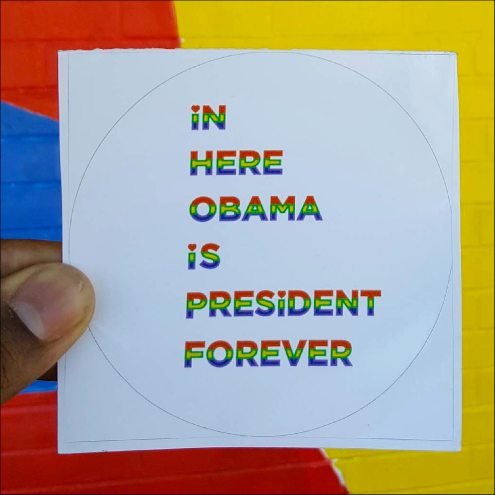
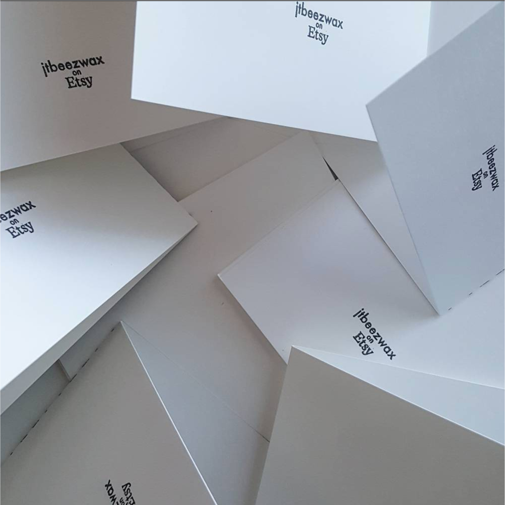

Bio
Jermaine T. Bell is a visual designer who holds a B.F.A. in Graphic Design from the Maryland Institute College of Art. Through his work at Havas Worldwide, Bell gained footing in advertising with clients like Michelob Ultra, Liberty Mutual Insurance, and Constellation Energy.
In 2016, Bell wrapped his tenure as one of Fagan Harris' Baltimore Corps fellows where he was the Marketing & Programming Director for Impact Hub Baltimore. There he developed brand identity & brand assets through graphic design support, began and managed the social media, formulated messaging & outreach plan for multiple & diverse communities, outreach to potential IHB partners & members Created Rise Residency with Author D. Watkins to highlight thought leadership in inclusion & equity & broaden reach to new audiences, created program content in collaboration with Rise Resident, D. Watkins, developed, organized, & executed all public Impact Hub Baltimore events, coordinated with featured speakers, presenters, panelists, vendors & artists, developed event structure & strategy, assured event registration through cross-promotion & partnerships, curated ongoing art exhibitions and their programmatic tie ins, created structure and events checklists for all Impact Hub Events, and liaised with Operations Director for partner events.

Currently Building on his work at Impact Hub Baltimore, Bell is now an Open Society Fellow where he hopes to engage the communities around Exit The Apple, which is located in the Barclay neighborhood, and create a system that supports black artists and allows their ideas to grow and thrive. He is excited about his partnership with Exit The Apple, which already has established a great reputation within the community. He will develop the programming with community members.
In 2015 as Programming Chair of AIGA, Bell spearheaded REdesign & REbuild an initiative with AIGA, the nation’s oldest and largest professional membership organization for graphic design—with 70 chapters and more than 25,000 members nationally. REdesign & REbuild partnered with The Neighborhood Design Center to rebrand and relaunch small businesses' marketing collateral after the Baltimore unrest of April 2015. The Druid Heights Community Development Corporation is the first recipient of this work.
Bell, is also a budding entrepreneur who sells his handcrafted prints and stationery that feature designs inspired by the African diaspora.
Tell me about the work you've done?
I got my start as a professional designer in an Advertising Agency, there I mostly worked on social media advertisements and email marketing for companies like Michelob Ultra & Liberty Mutual. Since leaving the agency I continued to have a focus on social media design and even branched out to social media management. But, lately my work has drifted more towards grassroots organizations, artists, non-profits, and start ups. However, I still dabble in corporate work. I just designed some collateral with Red Bull Amaphiko Academy for their upcoming launch here in Baltimore.

What are your proudest accomplishments of your career?
Launching my own small business jtbeezwax, a line of Stationery & Prints. It started as just e-commerce, but just one year in, and I am carried at Nubian Hueman in DC and Keeper's Vintage & Knits, Soy, Metal boutique in Baltimore.
What have been your biggest struggles of your career?
Completing a design degree as an adult, an "untraditional student" with 15 credits, 60 hours or more of homework, all while working two part time jobs, and maintaining a relationship was definitely my biggest challenge! But, I wanted to learn everything I could about design, and I wanted to do that at MICA, and, I did!
What are you doing that's special that sets you apart from your careers?
I am an Open Society Institute Fellow currently, which allows me to plan and develop programming that is near to my heart. I'm helping Artist Pierre Bennu create capacity and programming at ExitTheApple his studio, which he has opened to the community as a space for gatherings like community meetings or even art openings.

What have your experience been as a person of color in the design industry?
It's been interesting! I have learned a whole lot by being the only person of color in a lot of rooms, but even in the 7 or so years that I have been doing it professionally, I am happy to be seeing changes, slowly but surely!
How can design be more accommodating to underrepresented populations of people?
Design can stop thinking of itself as an institution, and instead as a collective of human beings. The idea that "design" is an impenetrable monolith is what allows people to hide, and not hire underrepresented people!